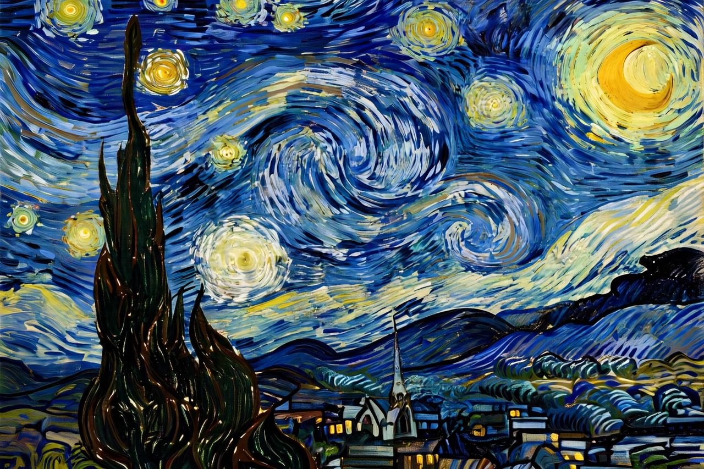

Vincent van Gogh

Self-portrait (1889) by Vincent van Gogh: the artist with a bandaged ear era beard, swirling blue-green backgroundVincent Willem van Gogh (30 March 1853 – 29 July 1890) was a Dutch Post-Impressionist painter who is among the most famous and influential figures in Western art history. In just over a decade he created about 2,100 artworks, including around 860 oil paintings, most of them in the last two years of his life. His work is noted for its bold colour, expressive and impasto brushwork, and emotional intensity.
Born into an upper-middle-class family in Zundert, Netherlands, van Gogh worked as an art dealer and lay preacher before turning to art in 1880. He struggled with severe mental illness throughout his adult life, famously mutilating part of his own ear during a breakdown in Arles in December 1888. He died at 37 from a self-inflicted gunshot wound, having sold little work and achieved almost no recognition in his lifetime.
Major works
Van Gogh's best-known works include The Potato Eaters (1885), the Sunflowers series (1888), The Bedroom (1888), The Starry Night (1889), painted during his asylum stay at Saint-Rémy, Irises (1889) and numerous self-portraits. His letters to his brother Theo, who supported him financially and emotionally, are a major source for his life and ideas.
Legacy
Posthumous exhibitions and the advocacy of his sister-in-law Jo van Gogh-Bonger brought him fame in the 20th century. His paintings now rank among the most expensive ever sold, and the Van Gogh Museum in Amsterdam holds the largest collection of his work.